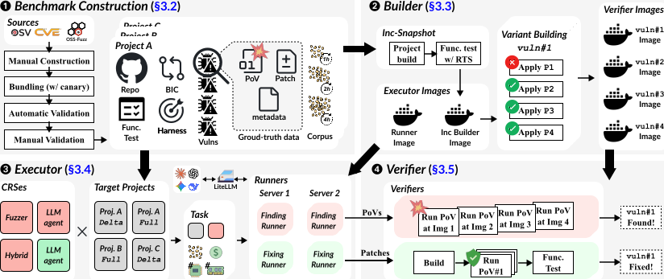
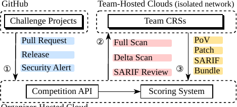
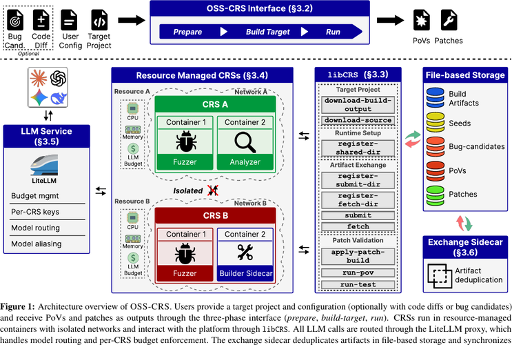
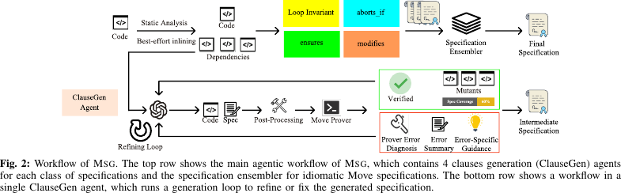
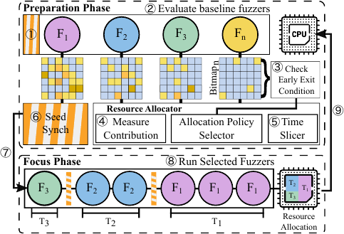
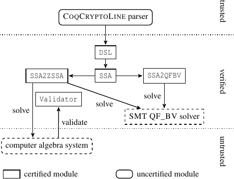
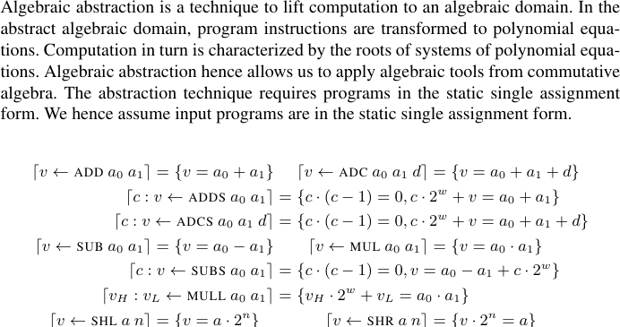
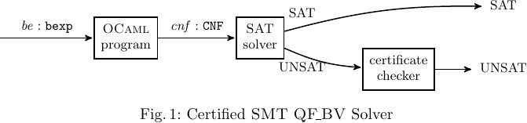
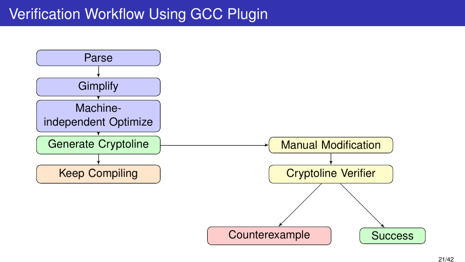

PhD Candidate — Georgia Institute of Technology · SSLab
I build vulnerability discovery and formal verification systems, with and without LLMs. My work includes CRSBench, a large-scale AI Cyber Reasoning System evaluation platform running 2,000+ CPU campaigns on GCP that found 14 real 0-days (3 acknowledged upstream); OSS-CRS, an OpenSSF sandbox project that found 7 additional 0-days using the AIxCC-winning CRS; and autofz, my first-author USENIX Security 2023 meta-fuzzer that composes existing fuzzers at runtime from per-workload feedback, beating collaborative fuzzing on 19 of 20 benchmarks and finding 152% more bugs than individual fuzzers. I also work on formal verification: CryptoLine-based verification of Curve25519 ladder-step and crypto field/group code (CCS); Coq-certified verification infrastructure for CryptoLine and SMT bit-vectors (CAV); and LLM-based specification generation for Move smart contracts (ASE 2025). I am advised by Prof. Taesoo Kim at SSLab.
Contributed security benchmark creation to Team Atlanta, DARPA AIxCC winner ($4M prize). 3× DEFCON CTF finalist (2nd, 4th, 12th).

Co-led the Team Atlanta benchmark/discovery platform and led its integration with OSS-CRS's standardized execution interface; distributed campaigns across 2,000+ GCP CPUs covered 124 benchmarks, 82 OSS projects, and 315 CPVs, finding 14 real 0-days.

Led the paper's patch-generation section and co-analyzed all 7 finalist CRSs across architectures, vulnerability discovery, patching, and competition lessons.


Built the first automated specification generator for Move, a 7.3k-LoC Rust/GPT system published at ASE 2025. Independently reverse-engineered under-documented Aptos compiler internals, traced source-to-bytecode lowering, and built cross-module dependency analysis with compile-validated selective inlining. Added ClauseGen agents, ensembling, and Move Prover-checked AST mutation to generate verifiable specs for 84% of evaluated Aptos Move functions. Supported by a Sui research gift.

First-author runtime meta-fuzzer for black-box fuzzer composition and resource scheduling; beat collaborative fuzzing on 19 of 20 benchmarks and found +152% bugs over individual fuzzers. Supported by a Cisco Research grant.
Retrospective: The Control Plane Was the Point: Revisiting autofz in the LLM Era.


Co-developed certified algebraic abstraction for bit-vector verification, reducing trusted reasoning in scalable cryptographic program proofs.


First-author work extending CryptoLine with signed arithmetic and GCC GIMPLE translation; verified Curve25519 ladder-step C in OpenSSL/BoringSSL plus field/group routines using SMT, Singular, and CryptoLine; found a NaCl bug.
I develop open-source tools under Axiweave, my umbrella organization for intelligent developer tooling, and Emacs packages under emacs-guru.